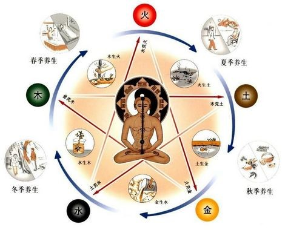

- Historia
 La medicina tradicional china, también conocida como “medicina oriental” surgió en la antigua China continental. Tiene más de 2500 años y desde entonces ha ido evolucionando y perfeccionándose, incluso para quienes confían en la moderna “medicina occidental”, la cual solo tiene un par de cientos de años. Sin embargo, es mucho lo que se puede aprender de las prácticas de la medicina tradicional china. Pero, ¿qué es exactamente la medicina tradicional china? El entendimiento de las premisas de la medicina tradicional china comienza con las filosofías subyacentes. Durante la dinastía Ming (1368-1644) aumentan las influencias de otras latitudes, tanto fuera de China, como Zheng He que llega hasta África occidental (1450-1453), como en sentido inverso, como los jesuitas que llegan a la China (y con ellos la medicina occidental, aunque inicialmente quedó restringida al emperador). En esta época se traducen numerosos textos de anatomía y de la circulación sanguínea al chino. Una de las grandes obras de esta época es Gran Tratado de Materia Médica, de Li Shizhen (1518-1593), que trata además de la patología y la terapéutica, la historia natural, la tecnología química e industrial, la geografía, la historia, la dietética, la cocina, la cosmología, la filosofía y la filología. Fue una obra traducida a las principales lenguas asiáticas y occidentales. En ella se hace referencia por primera vez a la sífilis, enfermedad aparecida en China entre 1505-1506, a la vez que los médicos occidentales, indios y árabes lo hacían en sus respectivas latitudes. El gran acupuntor Yang Jizou edita en este periodo los 10 capítulos de Zhen Jiu Da Cheng, una enciclopedia de acupuntura; de los clásicos médicos chinos; de técnica, clínica y terapéutica; de diagnóstico pediátrico y de tratamiento infantil mediante masaje, entre otros.
- El Ying y el Yang
 La naturaleza es el sello distintivo de la medicina tradicional china. La premisa básica de la medicina tradicional china es que nuestro cuerpo es un microcosmos del mundo y el universo que nos circundan. Usted probablemente ha oído hablar del “yin” y del “yang” (o al menos ha visto el símbolo). El yin y el yang son la base de la ciencia oriental y de la medicina china tradicional. Es el concepto de que las fuerzas opuestas de hecho son complementarias, esenciales, y que necesita existir en equilibrio y armonía para que haya una salud óptima. Algunos ejemplos son: luz y obscuridad, positivo y negativo, fuego y agua, el bien y el mal, hombre y mujer, expansión y contracción.
l significado originario de los términos yīn (陰) y yáng (陽) no se conoce con exactitud. El carácter chino tradicional de yīn (traducido frecuente como ‘oscuro, sombrío’), representa la parte norte, nubosa, de una montaña, mientras que en el simplificado (阴) aparece el carácter de ‘luna’ (月，yuè). El carácter tradicional de yáng representa el lado sur, soleado, de una montaña; en el simplificado (阳) aparece ‘sol’ (日, rì). Así parece estar de acuerdo el filósofo Wing-Tsit Chan que asocia a tales términos los fenómenos naturales de la nubosidad que cubre al sol y al brillo del mismo astro. Por su parte, Mircea Eliade cita a Marcel Granet al afirmar que el término yīn se encuentra relacionado con el tiempo frío, lo cubierto y lo interior; y yáng sugiere las ideas de lo soleado y el calor.
La naturaleza es el sello distintivo de la medicina tradicional china. La premisa básica de la medicina tradicional china es que nuestro cuerpo es un microcosmos del mundo y el universo que nos circundan. Usted probablemente ha oído hablar del “yin” y del “yang” (o al menos ha visto el símbolo). El yin y el yang son la base de la ciencia oriental y de la medicina china tradicional. Es el concepto de que las fuerzas opuestas de hecho son complementarias, esenciales, y que necesita existir en equilibrio y armonía para que haya una salud óptima. Algunos ejemplos son: luz y obscuridad, positivo y negativo, fuego y agua, el bien y el mal, hombre y mujer, expansión y contracción.
l significado originario de los términos yīn (陰) y yáng (陽) no se conoce con exactitud. El carácter chino tradicional de yīn (traducido frecuente como ‘oscuro, sombrío’), representa la parte norte, nubosa, de una montaña, mientras que en el simplificado (阴) aparece el carácter de ‘luna’ (月，yuè). El carácter tradicional de yáng representa el lado sur, soleado, de una montaña; en el simplificado (阳) aparece ‘sol’ (日, rì). Así parece estar de acuerdo el filósofo Wing-Tsit Chan que asocia a tales términos los fenómenos naturales de la nubosidad que cubre al sol y al brillo del mismo astro. Por su parte, Mircea Eliade cita a Marcel Granet al afirmar que el término yīn se encuentra relacionado con el tiempo frío, lo cubierto y lo interior; y yáng sugiere las ideas de lo soleado y el calor.